DOOR-SLAM: Distributed, Online, and Outlier Resilient SLAM for Robotic Teams
Pierre-Yves Lajoie , Benjamin Ramtoula , Yun Chang, Luca Carlone , and Giovanni Beltrame
Abstract—To achieve collaborative tasks, robots in a team need to have a shared understanding of the environment and their location within it. Distributed Simultaneous Localization and Mapping (SLAM) offers a practical solution to localize the robots without relying on an external positioning system (e.g. GPS) and with minimal information exchange. Unfortunately, current distributed SLAM systems are vulnerable to perception outliers and therefore tend to use very conservative parameters for inter-robot place recognition. However, being too conservative comes at the cost of rejecting many valid loop closure candidates, which results in less accurate trajectory estimates. This letter introduces DOOR-SLAM, a fully distributed SLAM system with an outlier rejection mechanism that can work with less conservative parameters. DOOR-SLAM is based on peer-to-peer communication and does not require full connectivity among the robots. DOOR-SLAM includes two key modules: a pose graph optimizer combined with a distributed pairwise consistent measurement set maximization algorithm to reject spurious inter-robot loop closures; and a distributed SLAM frontend that detects inter-robot loop closures without exchanging raw sensor data. The system has been evaluated in simulations, benchmarking datasets, and field experiments, including tests in GPS-denied subterranean environments. DOOR-SLAM produces more inter-robot loop closures, successfully rejects outliers, and results in accurate trajectory estimates, while requiring low communication bandwidth. Full source code is available at https://github.com/MISTLab/DOOR-SLAM.git.
Index Terms—SLAM, multi-robot systems, distributed robot systems, localization, robust perception.
I. INTRODUCTION
ULTI-ROBOT systems already constitute the backbone
Manuscript received September 10, 2019; accepted January 2, 2020. Date of publication January 20, 2020; date of current version February 6, 2020. This letter was recommended for publication by Associate Editor M. Walter and Editor S. Behnke upon evaluation of the reviewers’ comments. This work was supported in part by the Natural Sciences and Engineering Research Council of Canada (NSERC), in part by the J. A. DeSève Foundation, ARL DCIST CRA W911NF-17-2-0181, and in part by the DARPA “Specification-guided and Capability-aware Autonomy for Long-endurance Situational Awareness in Subterranean Environments” project. (Corresponding author: Pierre-Yves Lajoie.)
maintenance to self-driving cars, and have the potential to impact other endeavors, including search & rescue and planetary exploration. These applications involve a team of robots completing a coordinated task in an unknown or partially known environment, and require the robots to have a shared understanding of the environment and their location within it. While a common practice is to circumvent this need by adding external localization infrastructure (e.g., GPS, motion capture, geo-referenced markers), such a solution is not always viable; for instance, when robots are deployed for cave exploration or building inspection, the deployment of an external infrastructure may be dangerous, expensive, or impractical. Therefore, multi-robot SLAM solutions that can work without external localization infrastructure and provide reliable situational awareness are highly desirable.
Obtaining such a shared situational awareness is challenging since the sensor data required for SLAM is distributed across the robots, and communicating raw data may be slow (due to bandwidth constraints) or infeasible (due to limited communication range). For these reasons, current systems either rely on a centralized and offline post-processing step [1], assume all robots are always within communication range [2], or assume centralized pre-processing of the sensor data (e.g., to remove outliers [3]). We believe more flexible solutions are necessary for a broader adoption of multi-robot technologies. For instance, bandwidth issues can be mitigated by relying on local exchange of processed data among the robots to collaboratively compute a SLAM solution.
In addition to the communication constraints, multi-robot SLAM is challenging and prone to failures due to incorrect data association and perceptual aliasing. The latter is particularly problematic since it generates incorrect loop closures between scenes that look similar but correspond to different places. While this topic has received considerable attention in the centralized case [1], [4]–[8], the literature currently lacks distributed outlier rejection methods. We believe implementing distributed outlier rejection would improve the robustness of multi-robot systems, allow users to be less conservative during parameters tuning, and enable the detection of more loop closures, improving the accuracy of the SLAM solution.
Contribution. In this system paper, we present DOOR-SLAM, a fully distributed SLAM system for robotic teams. DOOR-SLAM has the following desirable features: (i) it does not require full connectivity maintenance between the robots, (ii) it is able to detect inter-robot loop closures without exchanging raw data, (iii) it performs distributed outlier rejection to remove incorrect
(b) with outlier rejection.
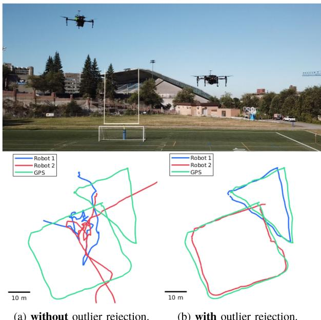
Fig. 1. Trajectory estimates from DOOR-SLAM (red and blue) and GPS ground truth (green, only used for benchmarking).
inter-robot loop closures, and (iv) it executes a distributed pose graph optimization to retrieve the robots’ trajectory estimates.
The proposed system includes two key modules. The first module is a pose graph optimizer that is robust to spurious measurements. We propose an implementation of distributed pose graph optimization along the lines of [3] combined with an outlier rejection mechanism based on [1], that we adapted for online and distributed operation. An example of the robustness afforded by the proposed module is showcased in Fig. 1, which reports the trajectory estimates with and without outlier rejection. Our implementation is robust to perceptual aliasing and allows practitioners to use a less conservative tuning of the SLAM front-end. The second module is a data-efficient distributed SLAM front-end. Similar to the recent approach [9], our system uses NetVLAD descriptors [10] for place recognition. However, our approach trades off some data-efficiency to obviate full connectivity maintenance and environment-specific pre-training requirements.
DOOR-SLAM has been evaluated in simulations, benchmarking datasets (KITTI [11]), and field experiments, including tests in GPS-denied subterranean environments. DOOR-SLAM runs online on an NVIDIA Jetson TX2 computer, successfully rejects outliers, and results in accurate trajectory estimates, while requiring a low bandwidth. We release the source code and Docker images for easy reuse of the system components by the community: https://github.com/MISTLab/DOOR-SLAM.git.
II. RELATED WORK
A. Distributed Pose Graph Optimization (PGO)
Pose Graph Optimization (PGO) is a popular estimation engine for SLAM. Centralized approaches for multi-robot PGO collect all measurements at a central station, which computes the trajectory estimates for all the robots [12]–[16]. Since the computation workload and the communication bandwidth of a centralized approach grow with the number of robots, related work has also explored distributed techniques, in which robots only exploit local computation and communication. Aragues et al. [17] use a distributed Jacobi approach to estimate 2D poses. Cunningham et al. [18], [19] use Gaussian elimination. Recent work from Choudhary et al. [3] introduces the Distributed Gauss-Seidel approach, which supports 3D cases and avoids the complex bookkeeping and information double counting required by the previous techniques. It requires only to share the latest pose estimates involved in inter-robot measurements. Recent distributed SLAM solutions [9] and [20] have used the implementation of Choudhary et al. [3] as back-end for their experiments. While here we focus on PGO, we refer the reader to [3] for an extensive review on other distributed estimation techniques.
B. Robust PGO
The problem of mitigating the effects of outliers in pose graph optimization has received substantial attention in the literature, due to the dramatic distortion that even one incorrect measurement can cause. Early work in the field includes techniques such as RANSAC [21], branch & bound [22], and M-estimation (see [23], [24] for a review). Sünderhauf et al. [4] introduce the idea of outliers deactivation using binary variables that are then relaxed to continuous variables. Agarwal et al. [5] build on top of this idea to dynamically scale the measurement covariances. Other works on the single robot case include Olson and Agarwal [6] and Pfingsthorn and Birk [25], [26] which consider multi-modal distributions for the noise. Recent work from Lajoie et al. [8] and Carlone and Calafiore [27] focus on robust global solvers based on convex relaxations. Instead of classifying the measurements individually, Latif et al. [7], Carlone et al. [28], Graham et al. [29] look for sets of mutually consistent measurements. Mangelson et al. [1] extend the latter idea to the multi-robot case and propose an effective graph-theoretic technique to find pairwise-consistent measurements among the inter-robot loop closures. Alternatives for multi-robot cases include Dong et al. [16] which search for consistent inter-robot measurements using expectation maximization. Wang et al. [20] leverage extra information from wireless channels to detect outliers during a multi-robot rendezvous.
C. Distributed Loop Closure Detection
Inter-robot loop closures are critical to align the trajectories of the robots in a common reference frame and to improve the trajectory estimates. In a centralized setup, a common way to obtain loop closures is to use visual place recognition methods, which compare compact image descriptors to find potential loop closures. This is traditionally done with global visual features [30], [31], or local visual features [32], [33] which can be quantized in a bag-of-word model [34]. More recently, convolutional neural networks (CNN), either using features trained on auxiliary tasks [35] or directly trained end-to-end for place recognition, such as NetVLAD [10], have generated more robust descriptors. Geometric verification using local features is then used to validate putative loop closures and estimate transformations between the corresponding observation poses [36], [37].

Fig. 2. DOOR-SLAM system overview.
Distributed loop closure detection has the additional challenge that the images are not collected at a single location and their exchange is problematic due to range and bandwidth constraints. Tardioli et al. [38] use visual vocabulary indexes instead of descriptors to reduce the required bandwidth. Cieslewski and Scaramuzza [9] propose distributed and scalable solutions for place recognition in a fully connected team of robots. A first approach [2] relies on bag-of-words ofvisual features [34] which are split and distributed among the team. Another one [39] pre-assigns a range of descriptors from NetVLAD to each robot, allowing place recognition search over the full team by communicating with a single other robot. These methods minimize the required bandwidth and scale well with the number of robots, but are designed for situations with full connectivity in the team. Tian et al. [40], [41] and Giamou et al. [42] propose complementary approaches to these methods. They consider robots having rendezvous and efficiently coordinate the data exchange during the geometric verification step, accounting for the available communication and computation resources.
III. THE DOOR-SLAM SYSTEM
Our distributed SLAM system relies on peer-to-peer communication: each robot performs single-robot SLAM when there is no teammate within communication range, and executes a distributed SLAM protocol during a rendezvous.
Our implementation leverages Buzz [43], a programming language specifically designed for multi-robot systems. Buzz offers useful primitives to build a fully decentralized software architecture, and seamlessly handles the transition between singlerobot and multi-robot execution. Buzz is a scripting language that lets us abstract away the details concerning communication, neighbor detection and management, and provides a uniform framework to implement and compare multi-robot algorithms (such as SLAM, task allocation, exploration, etc.). It provides a uniform gossip-based interface, implemented on WiFi, Xbee, Bluetooth, or custom networking devices. Buzz is thought of as an extension language, i.e. it is designed to be laid on top of other frameworks, such as the Robot Operating System (ROS). This allows us to run DOOR-SLAM on virtually any type and any number of robots that support ROS without modification. Experiments [43] show that Buzz can scale up to thousands of robots.
A system overview of DOOR-SLAM is given in Fig. 2. Each robot collects images from an onboard stereo camera and uses a (single-robot) Stereo Visual Odometry module to produce an estimate of its trajectory. In our implementation, we use the stereo odometry from RTAB-Map [44]. The images are also fed to the Distributed Loop Closure Detection module (Section III-A) which communicates information with other robots (when they are within communication range) and outputs inter-robot loop closure measurements. Then, the Distributed Outlier Rejection module (Section III-B) collects the odometry and inter-robot measurements to compute the maximal set ofpairwise consistent measurements and filters out the outliers. Finally, the Distributed Pose Graph Optimization module (Section III-B) performs distributed SLAM. For simplicity, in the current implementation, we only consider inter-robot loop closures [3] (i.e., loop closures involving poses of different robots). The system can be easily extended to use intra-robot loop closures (i.e., the loop closures commonly encountered in single-robot SLAM) by replacing stereo odometry [44] with a visual SLAM solution.
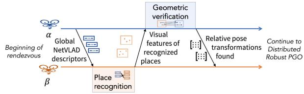
Fig. 3. Distributed loop closures detection overview.
In the following sections, we focus on the distributed place recognition module and on the distributed robust PGO module, while we refer the reader to [44] for a description of the stereo visual odometry module.
A. Distributed Loop Closure Detection
The distributed loop closure detection includes two submodules. The first submodule, place recognition, allows to find loop closure candidates using compact image descriptors. The second submodule, geometric verification, computes the relative pose estimate between two robot poses observing the same scene. The process is illustrated in Fig. 3.
The place recognition submodule relies on NetVLAD descriptors [10] which are compact and robust to viewpoint and illumination changes. Each robot locally computes the NetVLAD descriptors for each keyframe provided by the stereo visual odometry module. Once two robots (α and β) are in communication range, one of them (α) sends NetVLAD descriptors to the other (β). Robot α only sends the descriptors which have been generated since both robots’ last encounter or all of them if it is their first rendezvous. Robot β compares the received NetVLAD descriptors against the ones it has generated from its own keyframes. By doing so, robot β selects potential loop closures corresponding to pairs of keyframes having Euclidean distance below a given threshold. This process provides putative loop closures without requiring the exchange of raw data, full connectivity maintenance, or additional environment-specific pre-training.
Each robot also extracts visual features from the left image of the stereo pair, the associated feature descriptors, and their corresponding estimated 3D positions; these are used by the geometric verification submodule. After finding a set of putative loop closures, robot β sends the visual features, along with their descriptors and 3D positions, back to robot α. This is done for each keyframe involved in a putative loop closure. Using these features, robot α performs geometric verification using the solvePnpRansac function from OpenCV [45], which returns a set of inlier features and a relative pose transformation. If the set of inliers is sufficiently large (see Section IV), robot α considers the corresponding loop closure successful. Finally, robot α communicates back the relative poses corresponding to successful loop closures to robot Once the inter-robot loop closures are found and shared, both robots initiate the distributed robust pose graph optimization protocol described in the following section.
B. Distributed Robust PGO
This module is in charge of estimating the robots’ trajectories given the odometry measurements from the stereo visual odometry module and the relative pose measurements from the distributed loop closure detection module. The module also includes a distributed outlier rejection approach that removes spurious loop closures that may accidentally pass the geometric verification step described in Section III-A.
The (to-be-computed) trajectory of each robot is represented as a discrete set of poses, describing the position and the orientation of its camera at each keyframe. We denote the trajectory of robot α as , where SE(3), and and represent the rotation and the translation of the pose associated to the i-th keyframe of robot α.
The stereo visual odometry module produces odometry measurements, describing the relative pose between consecutive keyframes: for instance, $\bar { z } _ { \alpha _ { i } } ^ { \alpha _ { i - 1 } } \doteq [ \bar { R } _ { \alpha _ { i } } ^ { \alpha _ { i - 1 } } , \bar { \pmb { t } } _ { \alpha _ { i } } ^ { \alpha _ { i - 1 } } ]$ , denotes the (measured) motion of robot α between keyframe i 1 and keyframe i. On the other hand, the distributed loop closure detection module produces noisy relative pose measurements of the relative pose of two robots observing the same place: for instance, the inter-robot measurement $\bar { \pmb z } _ { \beta _ { k } } ^ { \alpha _ { i } } \doteq [ \bar { \pmb R } _ { \beta _ { k } } ^ { \alpha _ { i } } , \bar { \pmb t } _ { \beta _ { k } } ^ { \bar { \alpha } _ { i } } ]\beta .$
Our system includes two submodules: distributed outlier rejection and distributed pose graph optimization.
The distributed outlier rejection submodule rejects spurious inter-robot loop closures that may be caused by perceptual aliasing; if undetected, these outliers cause large distortions in the robot trajectory estimates (Fig. 1).
We adopt the Pairwise Consistent Measurement Set Maximization (PCM) technique proposed by Mangelson et al. [1] for outlier rejection and tailor it to a fully distributed setup. The key insight behind PCM is to check if pairs of inter-robot loop closures are consistent with each other and then search for a large set of mutually-consistent loop closures (as shown in [1], the largest set of pairwise consistent measurements can be found as a maximum clique). Although PCM does not check for the joint consistency of all the measurements, the approach typically ensures that gross outliers are rejected. The following metric is used to determine if two inter-robot loop closures and are pairwise consistent:

Fig. 4. Measurements needed to check pairwise consistency.
In this equation, represents the Mahalanobis distance and we use the notation of [46] to denote the pose composition and inversion . Intuitively, in the noiseless case, measurements along the cycle (shown in green in Fig. 4) formed by the loop closures and the odometry ) must compose to the identity, and the consistency metric (1) assesses that the noise accumulated along the cycle is consistent with the noise covariance Σ. The PCM likelihood threshold γ can be determined from the quantile of the chi-squared distribution for a given probability level [1].
The key insight of this section is that the consistency metric (1) can be computed from the loop closure measurements and the odometric estimates of the poses involved . Since both quantities are already used in the distributed PGO algorithm (described below), the outlier rejection can be performed “for free,” without requiring extra communication. After the pairwise consistency checks are performed, each robot computes the maximum clique of the measurements for each of its neighbors to find inlier loop closures. The inliers are passed to the distributed PGO.
The distributed PGO submodule uses the odometry measurements and the inlier inter-robot loop closures to compute the trajectory estimates of the robots. We use the approach proposed in [3]: the robots repeatedly exchange their estimate for the poses involved in inter-robot loop closures till they reach a consensus on the optimal trajectory estimate. More specifically, the approach of [3] solves pose graph optimization in a distributed fashion using a two-stage approach: first, it computes an estimate for the rotations of the robots along their trajectories; and then it recovers the full poses in a second stage. Each stage can be solved using a distributed Gauss-Seidel algorithm [3] which avoids complex bookkeeping and information double counting, and requires minimal information exchange.
IV. EXPERIMENTAL RESULTS
This section presents four sets of experiments. Section IV-B tests the performance of the outlier rejection mechanism in a simulated multi-robot SLAM environment. Section IV-C evaluates the results of DOOR-SLAM on the widely used KITTI00 sequence [11]. Section IV-D reports the results of field experiments conducted with two flying drones on an outdoor football field. Finally, Section IV-E reports the results of field tests conducted in underground environments in the context of the DARPA Subterranean Challenge [47].
A. Implementation Details
The DOOR-SLAM system is the result of the combination of many frameworks and libraries. First, we use the Robot
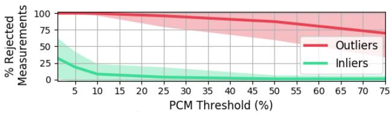
Fig. 5. Percentage of inliers and outliers rejected w.r.t. PCM likelihood threshold (100 runs avg. std.) in ARGoS.
Operating System to interface with the onboard camera and handle information exchange between the different core modules. We use the Buzz [43] programming language and runtime environment for communication and scheduling. In the frontend, we use the latest version of [44] for stereo visual odometry and we use the tensorflow implementation of NetVLAD provided in [9], with the default neural network weights trained in the original paper [10]. We only keep the first 128 dimensions of the generated descriptors to limit the data to be exchanged, as done in [9]. The visual feature extraction and relative pose transformation estimation are done by adapting the implementation in RTAB-Map and keeping their default parameters. The features used are Good Features to Track [48] with ORB descriptors [49]. We implemented the distributed robust PGO module in C++ using the GTSAM library [50] and building on the implementation of Choudhary et al. [3]. We followed a simulation, software-in-the-loop, hardware-in-the-loop, robot deployment code base implementation paradigm, starting from ARGoS simulation and ending with full deployment using Docker containers on NVIDIA Jetson TX2 on-board computers.
B. Simulation Experiments
To verify that our online and distributed implementation of PCM is able to correctly reject outliers, we designed a simulation using ARGoS [51]. We refer the reader to the video attachment for a visualization. We use 5 drones with limited communication range following random trajectories. We simulate the SLAM front-end by building their respective pose graphs using noisy measurements. When two robots come within communication range, they exchange inter-robot measurements based on their current poses and then use our SLAM back-end (PCM + distributed PGO) to compute a shared pose graph solution in a fully distributed manner. Inlier inter-robot loop closures are added with realistic Gaussian noise rad and m for rotation and translation measurements, respectively) while outliers are sampled from a uniform distribution.
Results. We look at three metrics in particular: the percentage of outliers rejected, the percentage of inliers rejected and the average translation error (ATE). The first evaluates if the spurious measurements are successfully rejected; the ideal value for this metric is 100%. The second indicates if the technique is needlessly rejecting valid measurements; the ideal value is 0%. The third evaluates the distortion of the estimates. Fig. 5 shows the percentage of outliers (in red) and inliers (in green) rejected with different PCM thresholds while Fig. 6 shows the ATE (in blue); the threshold represents the likelihood of accepting an outlier as inlier. As expected, using a lower threshold leads to the rejection of more measurements, including inliers, while using a higher threshold can lead to the occasional acceptance of outliers which in turn leads to a larger error. Therefore, in all our experiments, we used a threshold of 1% to showcase the performance of our system in its safest configuration.
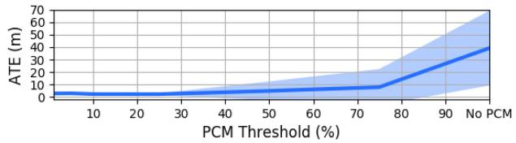
Fig. 6. Average Translation Error (ATE) w.r.t. PCM likelihood threshold (10 runs avg. std.) in ARGoS.
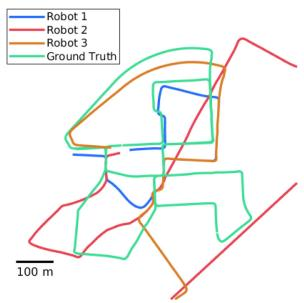
(a) without outlier rejection.
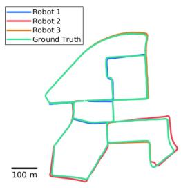
(b) with outlier rejection.
Fig. 7. Experiment on the KITTI00 dataset. Optimized trajectories (red, blue, and orange) and ground truth (green).
C. Dataset Experiments
The KITTI00 [11] sequence is a popular benchmark for SLAM. In our evaluation, we split the sequence into three parts and execute DOOR-SLAM on three NVIDIA Jetson TX2s. We used a PCM threshold of 1%, a NetVLAD comparison threshold of 0.15, and a minimum of 5 feature correspondences in the geometric verification to get a high number of loop closure measurements. While related work uses more conservative thresholds for NetVLAD and the number of feature correspondences to avoid outliers [9], we can afford more aggressive thresholds thanks to PCM.
Results. Fig. 7 shows that outliers are present among the loop closure measurements and that their effect on the pose graph is significant. The average translation error (ATE) without outlier rejection is 86.85 m, while the error is reduced to 8.00 m when using PCM. It is important to note that the error is higher than recent SLAM solutions on this sequence since for simplicity’s sake we do not make use of any intra-robot loop closures. Additional results on other KITTI sequences are available in the supplemental material [52].
D. Field Tests With Drones
To test that DOOR-SLAM can overcome the reality gap and map environments with severe perceptual aliasing using resource-constrained platforms, we also performed field experiments with two quadcopters featuring stereo cameras, flying over a football field. The cameras facing slightly downward are subject to perceptual aliasing, due to the repetitive appearance of the field (see video attachment). The hardware setup is described in Fig. 8.
| Platform | DJI Matrice 100 | |
| Camera | Intel Realsense D435 | |
| Computer | NVIDIA Jetson TX2 |
Fig. 8. Hardware setup used in field experiments.
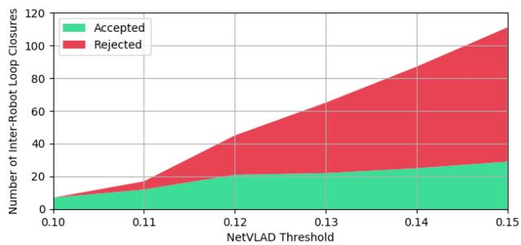
Fig. 9. Number of inter-robot loop closures accepted and rejected by PCM w.r.t. the NetVLAD threshold. We fix the minimum number of feature correspondences to 5.
We performed manual flights with trajectories approximately following simple geometric shapes as seen in Fig. 1. For the first experiments we recorded images and GPS data on the field and we executed DOOR-SLAM in an offline fashion on two NVIDIA Jetson TX2 connected through WiFi. This allowed us to reuse the same recordings with various combinations of the three major parameters ofDOOR-SLAM and study their influence (Section IV-D1) as well as assess DOOR-SLAM’s communication requirements (Section IV-D2). Finally, we performed an online experiment where DOOR-SLAM is executed on the drones’ onboard computers during flight (see Section IV-D3 and video attachment).
1) Influence of Parameters: As practitioners know, SLAM systems often rely on precise parameter tuning, especially to avoid outlier measurements from the front-end. We show that DOOR-SLAM is less sensitive to the parameter tuning since our back-end can handle spurious measurements. Moreover, we can leverage the robustness to outliers to significantly increase the number of loop closure candidates and potentially the number of valid measurements.
Results. In many scenarios, loop closures are hard to obtain due to external conditions such as illumination changes. Hence, it is important to consider as many loop closure candidates as possible. Instead of rejecting them prematurely in the front-end, DOOR-SLAM can consider more candidates and only reject the outliers before the optimization. To analyze the gain of being less conservative, we looked at the number of inter-robot loop closures detected with various NetVLAD thresholds (Fig. 9). As expected, when we increase this threshold, we obtain more candidates. Interestingly, even though most of the new loop closures are rejected by PCM (in red), we also get about three times more valid measurements (green) when using a looser threshold (0.15) as opposed to a more conservative one (0.10). Therefore, the use of less stringent thresholds allows adding valid measurements to the pose graph, enhancing the trajectory estimation accuracy.
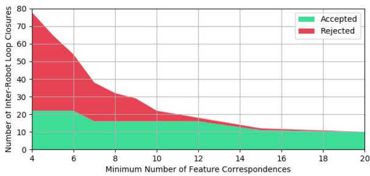
Fig. 10. Number of inter-robot loop closures accepted and rejected by PCM w.r.t. the minimum number of feature correspondences to consider geometric verification successful. We fix the NetVLAD threshold to 0.13.
TABLE I
EFFECT OF THE PCM THRESHOLD ON THE ACCURACY
| Threshold (%) | 1 | 10 | 25 | 75 | No PCM |
| ATE (m) | 2.1930 | 2.3185 | 3.1461 | 18.255 | 22.0159 |
Similarly, reducing the minimum number of feature correspondences that need to pass the geometric verification step for a loop closure to be considered successful leads to more loop closure candidates. RTAB-Map uses a default of 20 correspondences. As shown in Fig. 10, we can double the number of valid inter-robot loop closures when reducing the number of correspondences to 4 or 5.
The last parameter we analyzed is the PCM likelihood threshold to reject outliers. As seen in Section IV-B, a lower threshold leads to the rejection of more measurements, including inliers. However, since we are mapping a relatively small environment, we get many loop closures linking the same places. Therefore, as long as we do not disconnect the recognized places in the pose graph, a lower PCM threshold has the benefit of filtering out the noisiest loop closures and keeping the more precise ones. We can see in Table I that the resulting trajectories are affected by the noisier loop closures when we use a higher threshold, but that we still avoid the dramatic distortion caused by outliers seen in Fig. 1. Indeed, the average translation error (ATE) compared to the GPS ground truth is the lowest when we use the most conservative PCM threshold (i.e. 1%), for which we show the visual result in Fig. 1. On the other hand, we can see a large increase in the error when we use a threshold larger than 75% or no PCM, which indicates that outliers have not been rejected.
In light of those results, DOOR-SLAM can use less conservative parameters in the front-end to obtain more loop closure candidates and a more conservative PCM threshold to keep only the most accurate ones. This combination leads to a larger number valid loop closures and to more accurate trajectory estimates.
2) Communication: As described in Section III-A, the distributed loop closure detection module needs to share information between the robots about each keyframe to detect loop closure candidates. When a NetVLAD match occurs, the module needs to send the keypoint information for each matching keyframe. If there are enough feature correspondences, the module can compute the relative pose transformation and send the resulting inter-robot measurement to the other robot. Here we evaluate the communication cost of the proposed distributed front-end.
TABLE II DATA SIZES OF MESSAGES SENT
| Details of message sent for eachNetVLAD descriptorKeyframeRGB image | Avg. Size (kB) ± Std. | |
| NetVLAD descriptor | 1.00 ± 0.00 | |
| RGB image | 900.04 ± 0.00 | |
| NetVLAD match | Keypoints Information | 34.51 ± 0.68 |
| Keypoints Descriptors | 25.00 ± 0.49 | |
| Grayscale images | 600.06 ± 0.0 | |
| Inter-robot loopclosure | Pose Estimate | 0.34 ± 0.00 |
| Loop Closure Measurement | 0.34 ± 0.00 | |
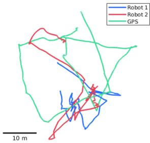
(a) without outlier rejection.
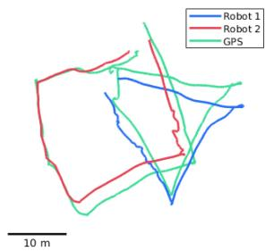
(b) with outlier rejection.
Fig. 11. Online Trajectory estimates from DOOR-SLAM (red and blue) and GPS ground truth (green, only for benchmarking).
Results. Table II reports the average data size sent at each keyframe. These averages were computed during our field experiments. For comparison, we also report (in gray) the size of the messages sent in case the robots were to directly transmit camera images. We see that the proposed front-end reduces the required bandwidth by roughly a factor of 10.
3) Online Experiments: We tested DOOR-SLAM online with two quadcopters. The main challenge of performing live experiments with DOOR-SLAM on the NVIDIA Jetson TX2 platforms is to run every module in real-time with the additional workload of the camera driver and the connection to the flight controller. To achieve this feat, we limited the frame rate of the onboard camera to 6 Hz. Modules such as the stereo odometry or the Tensorflow implementation of NetVLAD were particularly demanding in terms of RAM which required us to add 4 GB of swap space to the 8 GB initially available. We also tuned some visual odometry parameters to gain computational performance at the cost of losing some accuracy.
Results. Fig. 11 reports the trajectory estimates of our online experiments, compared with the trajectories from GPS. We performed this experiment with a PCM threshold of 1%, a NetVLAD threshold of 0.13, and a minimum of 5 inliers for geometric verification. Although we note a degradation of the visual odometry accuracy, the results in Fig. 11 are consistent with the ones observed in Fig. 1.
E. Field Tests in Subterranean Environments
To remark on the generality of the DOOR-SLAM back-end, this section considers a different sensor front-end and shows that DOOR-SLAM can be used in a lidar-based SLAM setup with minimal modifications. For this purpose we used lidar data collected by two Husky UGVs during the Tunnel Circuit competition of the DARPA Subterranean Challenge [47]. The data is collected with the VLP-16 Puck LITE 3D lidar and the loop closures are detected by scan matching using ICP. The environment, over 1 kilometer long, is a coal mine whose self-similar appearance is prone to causing perceptual aliasing and outliers. Fig. 12 shows the effect of using PCM: the left figure shows a top-view of the point cloud resulting from multi-robot SLAM without PCM, while the figure on the right is produced using PCM with a threshold of 1%. The reader may notice the deformation on the left figure, caused by an incorrect loop closure between two different segments of the tunnel. Although PCM largely improves the mapping performance, we notice that there is still an incorrect loop closure on the right figure. This kind of error is likely due to the fact that PCM requires a correct estimate of the measurement covariances which is not always available. To compute the trajectory estimates, our distributed back-end required the transmission of 92.27 kB, while in a centralized setup the transmission of the initial pose graph data and the resulting estimates from one robot to the other would require 196.30 kB. In summary, our distributed back-end implementation roughly halves the communication burden.
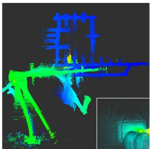
(a) without outlier rejection.
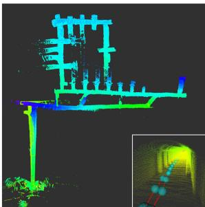
(b) with outlier rejection.
Fig. 12. Lidar-based multi-robot SLAM experiment during the DARPA Subterranean Challenge.
V. CONCLUSION
We present DOOR-SLAM, a system for distributed multi-robot SLAM consisting of a data-efficient peer-to-peer front-end and an outlier-resilient back-end. Our experiments in simulation, datasets, and field tests show that our approach rejects spurious measurements and computes accurate trajectory estimates. We also show that our approach can leverage its robust back-end to work with less conservative front-end parameters. In future work, we plan to explore not only the robustness to additional perception failures, such as large groups of correlated outliers, but also the robustness to communication issues (i.e., packet drop) to improve the safety and resilience of multi-robot SLAM systems.
REFERENCES
[1] J. G. Mangelson, D. Dominic, R. M. Eustice, and R. Vasudevan, “Pairwise consistent measurement set maximization for robust multi-robot map merging,” in Proc. IEEE Int. Conf. Robot. Autom., 2018, pp. 2916–2923.
[2] T. Cieslewski and D. Scaramuzza, “Efficient decentralized visual place recognition using a distributed inverted index,” IEEE Robot. Autom. Lett., vol. 2, no. 2, pp. 640–647, Apr. 2017.
[3] S. Choudhary, L. Carlone, C. Nieto, J. Rogers, H. Christensen, and F. Dellaert, “Distributed mapping with privacy and communication constraints: Lightweight algorithms and object-based models,” Int. J. Robot. Res., vol. 36, no. 12, pp. 1286–1311, 2017.
[4] N. Sünderhaufand P. Protzel, “Switchable constraints for robust pose graph SLAM,” in Proc. IEEE/RSJ Int. Conf. Intell. Robots Syst., 2012, pp. 1879– 1884.
[5] P. Agarwal, G. D. Tipaldi, L. Spinello, C. Stachniss, and W. Burgard, “Robust map optimization using dynamic covariance scaling,” in Proc. IEEE Int. Conf. Robot. Autom., 2013, pp. 62–69.
[6] E. Olson and P. Agarwal, “Inference on networks of mixtures for robust robot mapping,” Int. J. Robot. Research, vol. 32, no. 7, pp. 826–840, 2013.
[7] L. Yasir, G. Huang, J. Leonard, and J. Neira, “An online sparsitycognizant algorithm for visual navigation,” in Proc. Robot. Sci. Syst., 2014, pp. 36–44.
[8] P. Lajoie, S. Hu, G. Beltrame, and L. Carlone, “Modeling perceptual aliasing in SLAM via discrete-continuous graphical models,” IEEE Robot. Autom. Lett., vol. 4, no. 2, pp. 1232–1239, Apr. 2019, extended ArXiv version: https://arxiv.org/pdf/1810.11692.pdf, Supplemental Material: https://www.dropbox.com/s/vupak65wi75yzbl/2018j-RAL-DCGMsupplemental.pdf?dl=0
[9] T. Cieslewski, S. Choudhary, and D. Scaramuzza, “Data-efficient decentralized visual SLAM,” in Proc. IEEE Int. Conf. Robot. Autom., 2018, pp. 2466–2473.
[10] R. Arandjelovic, P. Gronat, A. Torii, T. Pajdla, and J. Sivic, “NetVLAD: CNN architecture for weakly supervised place recognition,” in Proc. IEEE Conf. Comput. Vision Pattern Recogni., 2016, pp. 5297–5307.
[11] A. Geiger, P. Lenz, and R. Urtasun, “Are we ready for autonomous driving? the KITTI vision benchmark suite,” in Proc. IEEE Conf. Comput. Vision Pattern Recognit., Providence, USA, Jun. 2012, pp. 3354–3361.
[12] L. Andersson and J. Nygards, “C-SAM: Multi-robot SLAM using square root information smoothing,” in Proc. IEEE Int. Conf. Robot. Autom., 2008, pp. 2798–2805.
[13] B. Kim et al., “Multiple relative pose graphs for robust cooperative mapping,” in Proc. IEEE Int. Conf. Robot. Autom., Anchorage, Alaska, May 2010, pp. 3185–3192.
[14] T. Bailey, M. Bryson, H. Mu, J. Vial, L. McCalman, and H. Durrant-Whyte, “Decentralised cooperative localisation for heterogeneous teams of mobile robots,” in Proc. IEEE Int. Conf. Robot. Autom., Shanghai, China, May 2011, pp. 2859–2865.
[15] M. Lazaro, L. Paz, P. Pinies, J. Castellanos, and G. Grisetti, “Multi-robot SLAM using condensed measurements,” in Proc. IEEE Int. Conf. Robot. Autom., 2011, pp. 1069–1076.
[16] J. Dong, E. Nelson, V. Indelman, N. Michael, and F. Dellaert, “Distributed real-time cooperative localization and mapping using an uncertainty-aware expectation maximization approach,” in Proc. IEEE Int. Conf. Robot. Autom., Seattle, WA, USA, May 2015, pp. 5807–5814.
[17] R. Aragues, L. Carlone, G. Calafiore, and C. Sagues, “Multi-agent localization from noisy relative pose measurements,” in Proc. IEEE Int. Conf. Robot. Autom., 2011, pp. 364–369.
[18] A. Cunningham, M. Paluri, and F. Dellaert, “DDF-SAM: Fully distributed SLAM using constrained factor graphs,” in Proc. IEEE/RSJ Int. Conf. Intell. Robots Syst., 2010, pp. 3025–3030.
[19] A. Cunningham, V. Indelman, and F. Dellaert, “DDF-SAM 2.0: Consistent distributed smoothing and mapping,” in Proc. IEEE Int. Conf. Robot. Autom., Karlsruhe, Germany, May 2013, pp. 5220–5227.
[20] W. Wang, N. Jadhav, P. Vohs, N. Hughes, M. Mazumder, and S. Gil, “Active rendezvous for multi-robot pose graph optimization using sensing over Wi-Fi,” 2019, arXiv: 1907.05538.
[21] M. Fischler and R. Bolles, “Random sample consensus: A paradigm for model fitting with application to image analysis and automated cartography,” Commun. ACM, vol. 24, pp. 381–395, 1981.
[22] J. Neira and J. Tardós, “Data association in stochastic mapping using the joint compatibility test,” IEEE Trans. Robot. Autom., vol. 17, no. 6, pp. 890–897, Dec. 2001.
[23] M. Bosse, G. Agamennoni, and I. Gilitschenski, “Robust estimation and applications in robotics,” Found. Trends Robot., vol. 4, no. 4, pp. 225–269, 2016.
[24] R. Hartley, J. Trumpf, Y. Dai, and H. Li, “Rotation averaging,” Int. J. Comput. Vision, vol. 103, no. 3, pp. 267–305, 2013.
[25] M. Pfingsthorn and A. Birk, “Simultaneous localization and mapping with multimodal probability distributions,” Int. J. Robot. Res., vol. 32, no. 2, pp. 143–171, 2013.
[26] M. Pfingsthorn and A. Birk–, “Generalized graph SLAM: Solving local and global ambiguities through multimodal and hyperedge constraints,” Int. J. Robot. Res., vol. 35, no. 6, pp. 601–630, 2016.
[27] L. Carlone and G. Calafiore, “Convex relaxations for pose graph optimization with outliers,” IEEE Robot. Autom. Lett., vol. 3, no. 2, pp. 1160–1167, Apr. 2018.
[28] L. Carlone, A. Censi, and F. Dellaert, “Selecting good measurements via -1 relaxation: A convex approach for robust estimation over graphs,” in Proc. IEEE/RSJ Int. Conf. Intell. Robots Syst., 2014, pp. 2667–2674, https://www.dropbox.com/s/7f304d5ag245ie4/ 2014c-IROS-outlierRejection.pdf?dl=0
[29] M. Graham, J. How, and D. Gustafson, “Robust incremental SLAM with consistency-checking,” in Proc. IEEE/RSJ Int. Conf. Intell. Robots Syst., Sep. 2015, pp. 117–124.
[30] A. Oliva and A. Torralba, “Modeling the shape of the scene: A holistic representation of the spatial envelope,” Int. J. Comput. Vision, vol. 42, pp. 145–175, 2001.
[31] I. Ulrich and I. Nourbakhsh, “Appearance-based place recognition for topological localization,” in Proc. IEEE Int. Conf. Robot. Autom., Apr. 2000, vol. 2, pp. 1023–1029.
[32] D. Lowe, “Object recognition from local scale-invariant features,” in Proc. Int. Conf. Comput. Vision, 1999, pp. 1150–1157.
[33] H. Bay, T. Tuytelaars, and L. V. Gool, “Surf: Speeded up robust features,” in Proc. Eur. Conf. Comput. Vision, 2006.
[34] J. Sivic and A. Zisserman, “Video google: A text re- trieval approach to object matching in videos,” in Proc. Int. Conf. Comput. Vision, 2003, pp. 1470–1477.
[35] N. Suenderhauf, S. Shirazi, F. Dayoub, B. Upcroft, and M. Milford, “On the performance of ConvNet features for place recognition,” in Proc. IEEE/RSJ Int. Conf. Intell. Robots Syst., Sep. 2015, pp. 4297–4304.
[36] J. Philbin, O. Chum, M. Isard, J. Sivic, and A. Zisserman, “Object retrieval with large vocabularies and fast spatial matching,” in Proc. IEEE Conf. Comput. Vision Pattern Recognit., Jun. 2007, pp. 1–8.
[37] D. Scaramuzza and F. Fraundorfer, “Visual odometry [tutorial],” IEEE Robot. Autom. Mag., vol. 18, no. 4, pp. 80–92, Dec. 2011.
[38] D. Tardioli, E. Montijano, and A. R. Mosteo, “Visual data association in narrow-bandwidth networks,” in Proc. IEEE/RSJ Int, Conf. Intell. Robots Syst., Sep. 2015, pp. 2572–2577.
[39] T. Cieslewski and D. Scaramuzza, “Efficient decentralized visual place recognition from full-image descriptors,” in Proc. Int. Symp. Multi-Robot Multi-Agent Syst., Dec. 2017, pp. 78–82.
[40] Y. Tian, K. Khosoussi, M. Giamou, J. P. How, and J. Kelly, “Near-optimal budgeted data exchange for distributed loop closure detection,” Robot. Sci. Syst., pp. 71–80, 2018.
[41] Y. Tian, K. Khosoussi, and J. P. How, “A resource-aware approach to collaborative loop closure detection with provable performance guarantees,” Jul. 2019, arXiv:1907.04904 [cs].
[42] M. Giamou, K. Khosoussi, and J. P. How, “Talk resource-efficiently to me: Optimal communication planning for distributed loop closure detection,” in Proc. IEEE Int. Conf. Robot. Autom., 2018, pp. 3841–3848.
[43] C. Pinciroli and G. Beltrame, “Buzz: An extensible programming language for heterogeneous swarm robotics,” in Proc. IEEE/RSJ Int. Conf. Intell. Robots Syst., Oct. 2016, pp. 3794–3800.
[44] M. Labbe and F. Michaud, “RTAB-Map as an open-source lidar and visual simultaneous localization and mapping library for large-scale and long-term online operation,” J. Field Robot., vol. 36, no. 2, pp. 416–446, 2019.
[45] G. Bradski, “The OpenCV library,” Dr. Dobb’s J. Softw. Tools, 2000.
[46] R. Smith and P. Cheeseman, “On the representation and estimation of spatial uncertainty,” Int. J. Robot. Res., vol. 5, no. 4, pp. 56–68, 1987.
[47] DARPA, “DARPA subterranean challenge,” 2019. [Online]. Available: https://www.subtchallenge.com/, 2019, Accessed: Sep. 9, 2019.
[48] J. Shi and C. Tomasi, “Good features to track,” in Proc. IEEE Conf. Comput. Vision Pattern Recognit., 1994, pp. 593–600.
[49] E. Rublee, V. Rabaud, K. Konolige, and G. Bradski, “ORB: An efficient alternative to SIFT or SURF,” in Proc. Int. Conf. Comput. Vision, 2011, pp. 2564–2571.
[50] F. Dellaert, “Factor graphs and GTSAM: A hands-on introduction,” Georgia Institute Technol, Atlanta, GA USA, Tech. Rep. GT-RIM-CP&R-2012- 002, Sep. 2012.
[51] C. Pinciroli et al., “ARGoS: A modular, parallel, multi-engine simulator for multi-robot systems,” Swarm Intell., vol. 6, no. 4, pp. 271–295, 2012.
[52] P. Lajoie, B. Ramtoula, Y. Chang, L. Carlone, and G. Beltrame, “DOOR-SLAM: Distributed, online, and outlier resilient SLAM for robotic teams,” Tech. Rep., Dep. comput. software eng., École Polytechnique de Montréal, Montreal, QC, Canada, 2019, arXiv preprint: 1909.12198, https://arxiv.org/pdf/1909.12198.pdf, Supplemental Material: https://www.dropbox.com/s/wgoqhiz8b96dl88/supplemental_ material.pdf?dl=0.
md/2020_DOOR-SLAM.md 预渲染生成（OCR 语料，插图取自原文）。
公式以 MathML 呈现，浏览器原生渲染，不依赖外部脚本或字体 CDN。